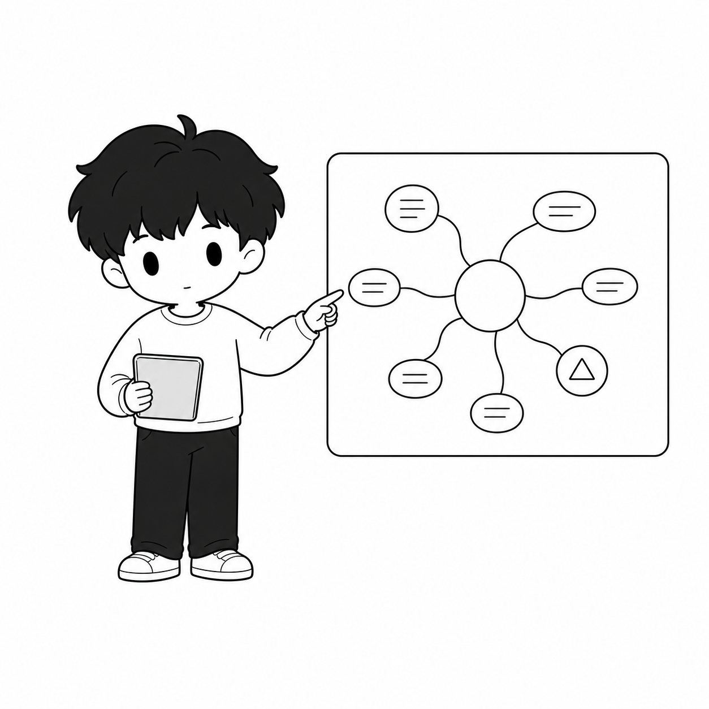

白底、黑灰、局部高光
最贴近 Ze Universe 底盘。颜色只在小标题、标签、callout 和路径里出现。
Ze Web Design System 以白底、局部低饱和色、Ze Rough Line、Dot 交互和受控插图适配作为最终基础。
Symbols stay abstract: focus, question, structure, growth, continuity.
这些不是可选路线，而是最终语言的四个层：白底、低饱和阅读标记、手绘结构线和抽象交互符号。
最贴近 Ze Universe 底盘。颜色只在小标题、标签、callout 和路径里出现。
适合文章、资源和知识页：用蓝、紫、玫瑰、琥珀做阅读层级。
适合解释流程、方法、状态变化。需要控制用量，避免变成儿童涂鸦。
光标、focus、active tab、loading、section marker 都可以用 Dot，但不能人格化。
颜色不需要每次都有语义解释，但必须低饱和、局部、可读。绿色可以存在，但不再是整站背景。
#eef5f8 / #476a80Research, system note, feedback.#f2eff7 / #6b627bThinking, reflection, category.#f8f1df / #80652dHighlight, path, quote emphasis.#f7eeee / #875d66Boundary, warning, emotional friction.#eef4ee / #61745fUseful locally, never the site canvas.#ffffff / #141414 / #dedfd9The real foundation.线条采用 Excalidraw / Rough.js 式的双描边、轻微漂移和可控粗细变化，不再依赖僵硬直线。
默认模式。用于卡片边框、section frame、figure frame 和轻量分割。
比 hairline 更可见。用于 divider、underline、callout separator 和文章标注。
只给 tool controls、CTA、selected cards 和 product modules 使用。
用于 Dot path、conceptual flow、article figure 和真实内容关系。
这个页面已经启用 Dot cursor、hover lift 和 reveal。它们是可确认的真实交互，不是文档里的空话。
细指针设备上会出现小黑点 cursor；hover 到链接、按钮、卡片时会扩成 focus ring。
内容默认可见逻辑不依赖动画；reveal 只是增强进入节奏，并支持 reduced motion。
组件轻微上移、边线变深，不使用弹跳、发光或夸张缩放。
Dot 可以表达 focus、pause、possibility、continuation，但永远不是角色。
同一张 Ze 视觉锚点在不同页面位置应该有不同的尺寸和留白策略，而不是僵硬塞满。


